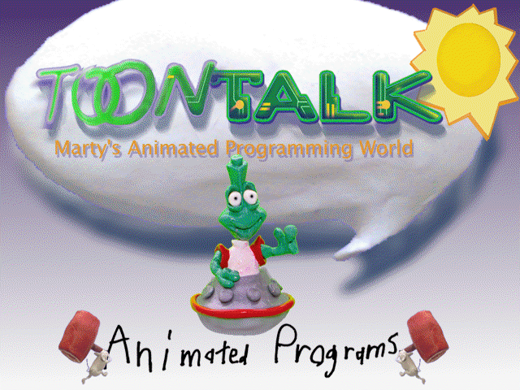

ToonTalk 3 (version 3.191)
(c) 1992-2007. Ken Kahn. All rights reserved.
Loading, please wait.
What do you want to do with ToonTalk?
Play Puzzle Game
Show Demos
Basics
Introductory Tour
Exploding Houses
Swap Numbers
Ping Pong Game
Part 1
Part 2
Part 3
Computer Science Examples
Fibonacci
Factorial
Bank Account
Appending Lists
Free Play
loading ToonTalk…
Playground Notebook
Playground City
Open a .dmo…
About ToonTalk
Hi. Please type your name.
Long Hair
Hat
Bald
I want to be able to travel in time to undo mistakes or replay what I just did. (Sometimes ToonTalk runs slowly when this is checked.)
Start in full screen
Mute
BACK
Welcome to ToonTalk.
How to play →
loading engine…
Full screen
🔊
Open a .dmo…
Save this session
⏱ Time travel